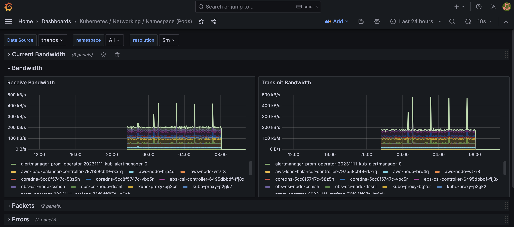

[!WARNING] This is a github note
使用 Thanos 扩展 Prometheus 高可用监控架构¶
架构描述¶
Prometheus 是一款开源的监控和报警工具，专为容器化和云原生架构的设计，通过基于 HTTP 的 Pull 模式采集时序数据，提供功能强大的查询语言 PromQL，并可视化呈现监控指标与生成报警信息。客户普遍采用其用于 Kubernetes 的监控体系建设。当集群数量较多，监控平台高可用性和可靠性要求高，希望提供全局查询，需要长时间保存历史监控数据等场景下，通常使用 Thanos 扩展 Promethseus 监控架构。Thanos是一套开源组件，构建在 Prometheus 之上，用以解决 Prometheus 在多集群大规模环境下的高可用性、可扩展性限制。
独立 Kubernetes 集群通常使用 Prometheus Operator 部署所有相关组件包括 Alert Manager、Grafana 等。Prometheus 收到监控指标后会保存在内存中，并且通过 WAL (Write-ahead Log) 方式持久化到磁盘，数据持久化一般会选择直接使用 EBS（不支持使用 NFS）。 Pod 重启后，将重新读取 WAL 文件到内存，如果未使用 EBS，将可能导致最近的监控数据缺失（取决于 TSDB Block Duration）。这种独立部署的监控架构优点是部署方便，EBS 性能也可以满足大部分场景，但缺点也显而易见，即无法保存太长时间的历史数据。当需要做历史性能数据分析，或者使用 Prometheus 进行成本分析的场景都会依赖于较长时间的历史数据。Thanos 主要通过接收并存储 Prometheus 的多集群数据副本，并提供全局查询和一致性数据访问接口的方式，实现了对于 Prometheus 的可靠性、一致性和可用性保障，从而解决了 Prometheus 单集群在存储、查询历史数据和备份等方面的扩展性挑战。
在讨论基于 Thanos 的不同监控架构之前，我们先了解下 Thanos 及其常用的组件，更多详细信息可以参考 thanos.io 。
- Sidecar（边车）：运行在 Prometheus 的 Pod 中，读取其数据以供查询和/或上传到云存储。
- Store（存储网关）：用于从对象存储桶（例如：AWS S3）上查询数据。
- Compactor（压缩器)：对存储在对象存储桶中的数据进行压缩、聚合历史数据以减小采样精度并长久保留。
- Receive（接收器）：接收来自 Prometheus 远程写入日志的数据，并将其上传到对象存储。
- Ruler（规则器）：针对 Thanos 中的数据评估记录和警报规则。
- Query（查询器）：实现 Prometheus 的 v1 API，查询并汇总来自底层组件的数据。将所有数据源添加为 Query 的 Endpoint，包括 Sidecar、 Store、 Receive 等。
- Query Frontend（查询前端）：实现 Prometheus 的 v1 API，将其代理给查询器，同时缓存响应，并可以拆分查询以提高性能。
第一种监控架构（对应下图蓝色和绿色集群及组件）：
- 被监控集群（Observee）部署 Prometheus 且启用 Thanos 的 Sidecar 方式将监控的历史数据定期归档到 S3，通过部署 Thanos Store 组件查询历史数据（下图中 Store 组件部署在监控集群中），被监控集群中不启用 Grafana 组件；
- 监控集群（Observer）除了部署 Prometheus 之外，将额外部署 Grafana 作为统一 Dashboard 展示。
第二种监控架构（对应下图红色集群及组件）:
- 被监控集群（Observee）除了启用 Thanos Sidecar 之外，还启用了 Prometheus 的 Remote Write 功能，将未归档的数据以 WAL 方式远程传输到部署在监控集群（Observer）上的 Thanos Receive，以保证数据的冗余度。 Thanos Receive 同样可以将历史监控数据归档到 S3 上，且支持被 Thanos Query 直接查询，同时避免直接查询 Sidecar 而给被监控集群带来额外的性能损耗。
第三种监控架构（对应下图黄色集群及组件）：
- 在多集群监控场景下，一般会在每个集群部署独立的 Prometheus 组件。Prometheus 提供 Agent Mode 针对这样的场景可以最小化资源占用，直接启用 Remote Write 功能将监控数据集中保存 （可以是另一个 Prometheus 集群）。在 AWS 上可以使用托管的 Prometheus 服务作为集中监控数据持久化，提供最好的性能和最低的维护成本。最近 AWS 还发布了 Prometheus Agentless 部署方式更进一步简化监控部署架构（文档）

以下总结了 Prometheus 的监控场景以及适合的环境。监控集群（Observer）上将部署 Grafana 作为统一 Dashboard 展示：
- 第一种监控架构，上图蓝色和绿色集群及组件适合普通生产环境，可以容忍额外性能损耗
- 监控集群（Observer）- Prometheus & Grafana + Thanos Store
- 被监控集群（Observee）- Prometheus + Thanos Sidecar
- 优点
- 架构简单
- 只有一份监控数据，最小化存储成本和其他资源开销
- 缺点
- 无监控数据冗余
- 查询监控数据将给被监控集群带来额外性能损耗
- 第二种监控架构，上图红色集群及组件适合生产环境对于监控数据冗余度要求高的场景
- 监控集群（Observer）- Prometheus & Grafana + Thanos Store & Receive
- 被监控集群（Observee）- Prometheus with Remote Write + Thanos Sidecar & Compactor
- 优点
- 直接从 Thanos Receive 查询监控数据，对被监控集群没有额外性能损耗，（在 0.19 版本，sidecar 没有实现 StoreAPI 前，通过 receive 查询最新的性能数据）
- 缺点
- 架构复杂，每个集群对应一组 Thanos Receive，建议配置副本数量与源集群 Prometheus 副本数量相同
- 监控数据冗余，可以使用 Compactor 对数据进行压缩、聚合历史数据以减少存储成本
- 第三种监控架构，上图黄色集群及组件
- 监控集群（Observer）- Prometheus & Grafana + Thanos Store & Receive
- 被监控集群（Observee）- Prometheus Agent Mode, or Prometheus with Remote Write, no additional components)
- 优点
- 架构简单，使用 Agent Mode 几乎无状态，可以使用除 stateful 之外的其他 deployment，本地存储需求低（除非远程 endpoint 不可用时，本地缓存数据以便重试）
- 可实现集中告警 - 告警将通过 Thanos Ruler 定义，通过 Thanos Query 查询 Receive 并发送到监控集群的 Alert Manager 实现
- 缺点
- 无监控数据冗余，sidecar、alert、rules 将不可用与 agent mode
go-through-¶
Prometheus Operator 提供 Kubernetes 原生部署和管理 Prometheus 及相关监控组件的功能。该项目的目的是简化和自动配置 Kubernetes 集群基于 Prometheus 的监控堆栈。本实验基于 Prometheus Operator 部署作为基础，通过 values 参数文件定制，详细信息参见（Github）。接下来我们将创建 3 个 EKS 集群，分别对应上图中的蓝色、红色、黄色集群验证 Thanos 相关配置。 xiang
本实验中将使用 Terraform 快速创建 EKS 集群，并且自动部署上图中相关的 Prometheus 监控架构（Github），然后分步骤部署 Thanos 相关组件（Github），带大家了解 Thanos 的配置和工作原理。
Prometheus on EKS¶
- 首先我们将先创建 3 个 EKS 集群,
ekscluster1是监控集群（Observer）,ekscluster2和ekscluster3是被监控集群（Observee） - 本实验中使用了预设的子域名用于简化服务之间的访问和对外暴露。需要提前在 Route53 中创建该子域名（复制链接中的函数并粘贴到命令行）
- 并且在上游 Route53 中创建对应的 NS 记录（文档）（复制链接中的函数并粘贴到命令行），此处离开 Cloud9 窗口，或者确保命令行有上游 Route53 相应的权限
- 获取 Thanos 配置模板
-
本实验将使用下面参数进行创建，参考
README.md
CLUSTER_NAME_1=ekscluster1 CLUSTER_NAME_2=ekscluster2 CLUSTER_NAME_3=ekscluster3 DOMAIN_NAME=thanos.${PARENT_DOMAIN_NAME} # sub-domain will be created by terraform THANOS_BUCKET_NAME=thanos-store-eks0103-${RANDOM} AWS_DEFAULT_REGION=$(curl -s 169.254.169.254/latest/dynamic/instance-identity/document | jq -r '.region') export CLUSTER_NAME_1 CLUSTER_NAME_2 CLUSTER_NAME_3 DOMAIN_NAME THANOS_BUCKET_NAME AWS_DEFAULT_REGION aws s3 mb s3://${THANOS_BUCKET_NAME} mkdir POC cd POC-template find ./ -type d -name "[a-z]*" -exec mkdir ../POC/{} \; find ./ -type f -name "*" |while read filename ; do cat $filename |envsubst > ../POC/$filename done cd ../../ -
获取 Terraform 代码开始创建环境（参考文档）
- 修改 terraform.tfvars 配置如下，请按照
- 创建独立环境用于本实验
- 创建 ekscluster1，并根据命令行输出保存 kubeconfig 配置
- 按照上述操作分别进入其他两个目录创建 ekscluster2 和 ekscluster3，可以通过其他 terminal 同时操作
thanos¶
- 命令行切换到 Observer 集群（ekscluster1），进入
thanos-example/POC目录开始安装 Thanos 组件
store¶
- 查看 Terraform 自动创建的 s3 的 配置和 service account
- 部署 thanos store 用于历史数据查询
query-and-query-frontend-¶
- query-deployment 文件中指定了查询目标 endpoint，包括 sidecar，receive，store等，本实验均通过域名访问，无需手工修改
- query-frontend-service 文件中也绑定了域名访问，无需手工修改。通过 9090 端口可以直接访问
- query-frontend-deployment 文件中指定了如下分割查询的参数，用于查询较大历史跨度数据时可以分割查询以提高效率
- 部署 query 和 query frontend
receive¶
- 部署 2 个 thanos receive，分别对应 ekscluster2 和 ekscluster3
grafana¶
query history metrics¶
- 修改 Grafana 默认密码
- 添加 Thanos Query Frontend 作为 Prometheus 类型的数据源
- 直接使用 Kubernetes 内部域名: http://thanos-query-frontend.thanos.svc.cluster.local:9090
- 或者上文提到的 Query Frontend Service 绑定的域名访问
- go this dashboard
Kubernetes / Networking / Namespace (Pods)
 - we have history data, but no latest 2 hour metrics
- go to query deployment to add thanos sidecar svc (
xxx-kub-thanos-external) to endpoint list with port10901 - query again from grafana, we will get full metrics
{kind=link}
query by label cluster (prefer)¶
- modify existed variable to use cluster label
- no need to change dashboard definitions

- no need to change dashboard definitions
- we already label data in prometheus yaml and receive yaml with
cluster=my_cluster_name
query by externalLabels (alternative)¶
- custom dashboard

others¶
- 刷新 receive 数据时抖动严重
- 检查是否多副本 receive sts，且未做数据 replica
thanos frontend¶
- open svc of thanos frontend:
thanos-query-frontend.${DOMAIN_NAME}- min time in receive table: means prometheus remote write has valid and data has been received by thanos receive
- min time in sidecar table: data in thanos local before duration, 2 hr will write data from WAL to duration, if < 2hrs “-” will display. if over 2hrs, oldest data in local will be display
- min time in store table: data has been store to s3, check labelset to identify data was written by receive or sidecar
{kind=link}
refer¶
prometheus tsdb block duration¶
- change block-duration, will cause prometheus statefulset cannot be start
- if using Thanos sidecar,
max-block-durationwill be2h
samples¶
thanos config sample in this POC¶
grafana ingress with alb sample¶
DOMAIN_NAMEshould beenvironment_name.hosted_zone_name, for examplethanos.eks1217.aws.panlm.xyz
grafana ingress with nginx sample¶
envsubst >${TMP}-1.yaml <<-EOF
grafana:
deploymentStrategy:
type: Recreate
ingress:
enabled: true
annotations:
kubernetes.io/ingress.class: nginx
cert-manager.io/cluster-issuer: "letsencrypt-prod"
hosts:
- grafana.${DOMAIN_NAME}
tls:
- secretName: grafana.${DOMAIN_NAME}
hosts:
- grafana.${DOMAIN_NAME}
persistence:
enabled: true
storageClassName: gp2
accessModes:
- ReadWriteOnce
size: 1Gi
prometheus:
prometheusSpec:
replicas: 2
retention: 12h
retentionSize: "10GB"
ruleSelectorNilUsesHelmValues: false
serviceMonitorSelectorNilUsesHelmValues: false
podMonitorSelectorNilUsesHelmValues: false
storageSpec:
volumeClaimTemplate:
spec:
storageClassName: gp2
accessModes: ["ReadWriteOnce"]
resources:
requests:
storage: 10Gi
EOF
thanos ingress with nginx sample¶
# enable prometheus with thanos
envsubst >${TMP##*.}-1-1.yaml <<-EOF
prometheus:
thanosService:
enabled: true
thanosServiceMonitor:
enabled: true
thanosServiceExternal:
enabled: true
type: LoadBalancer
thanosIngress:
enabled: true
ingressClassName: nginx
hosts:
- thanos-gateway.${DOMAIN_NAME}
paths: []
# - /
pathType: ImplementationSpecific
tls:
- secretName: thanos-gateway-tls
hosts:
- thanos-gateway.${DOMAIN_NAME}
prometheusSpec:
thanos:
objectStorageConfig:
existingSecret: {}
key: thanos.yaml
name: thanos-s3-config
EOF
enable sigv4 in grafana data source for AMP¶
- add following lines to values.yaml
other samples¶
- https://github.com/thanos-io/kube-thanos/tree/main/examples
- https://github.com/infracloudio/thanos-receiver-demo/tree/main/manifests
receive controller¶
- https://github.com/observatorium/thanos-receive-controller/tree/main
- receive controller does not included in this POC, it could based on header in remote write traffic to forward data to specific receive, refer (https://www.infracloud.io/blogs/multi-tenancy-monitoring-thanos-receiver/)
- In this POC we use dedicate receive. you could use receive route with receive controller project. refer (https://thanos.io/tip/proposals-accepted/202012-receive-split.md/)
- download receive-controller.tar.gz
- create receive controller in thanos namespace
- receive controller will generate
thanos-receive-generatedconfigmap with endpoint for receive route scenarios, include this file as hashring-config - create default s3 config
refer code block refer-s3-config
- create sa
links¶
- https://observability.thomasriley.co.uk/prometheus/using-thanos/high-availability/
- https://github.com/prometheus-operator/prometheus-operator/blob/main/Documentation/high-availability.md
- https://medium.com/@kakashiliu/deploy-prometheus-operator-with-thanos-60210eff172b
- https://particule.io/en/blog/thanos-monitoring/
- https://blog.csdn.net/kingu_crimson/article/details/123840099
- thanos
- prometheus
- prometheus
- https://github.com/terraform-aws-modules/terraform-aws-eks/issues/2009
- https://github.com/prometheus-operator/prometheus-operator/blob/main/Documentation/designs/prometheus-agent.md
- prometheus-agent
- https://p8s.io/docs/operator/install/
todo¶
- thanos receive router
- thanos compact component, and crash issue
- configmap in prometheus
- store hpa and query hpa
- store startup speed for large history data